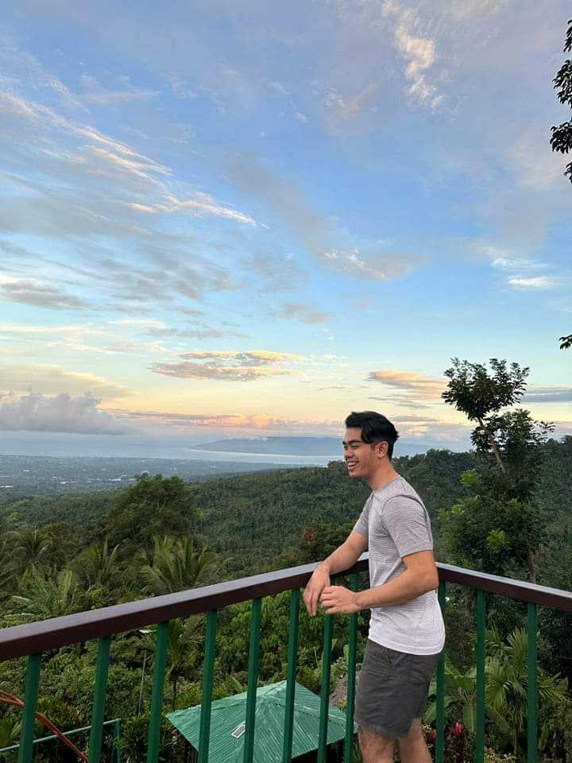
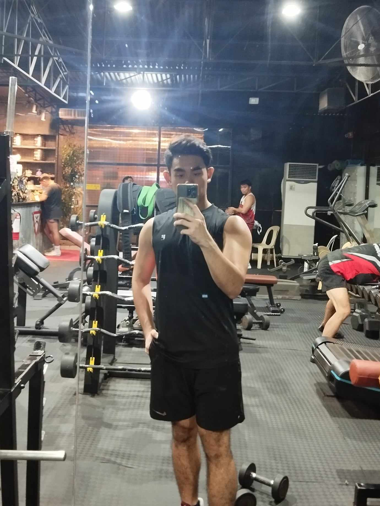
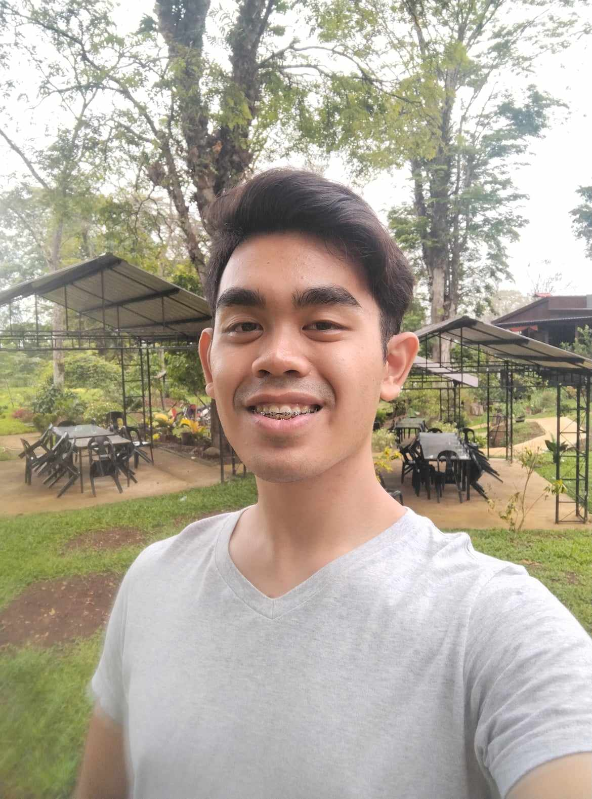
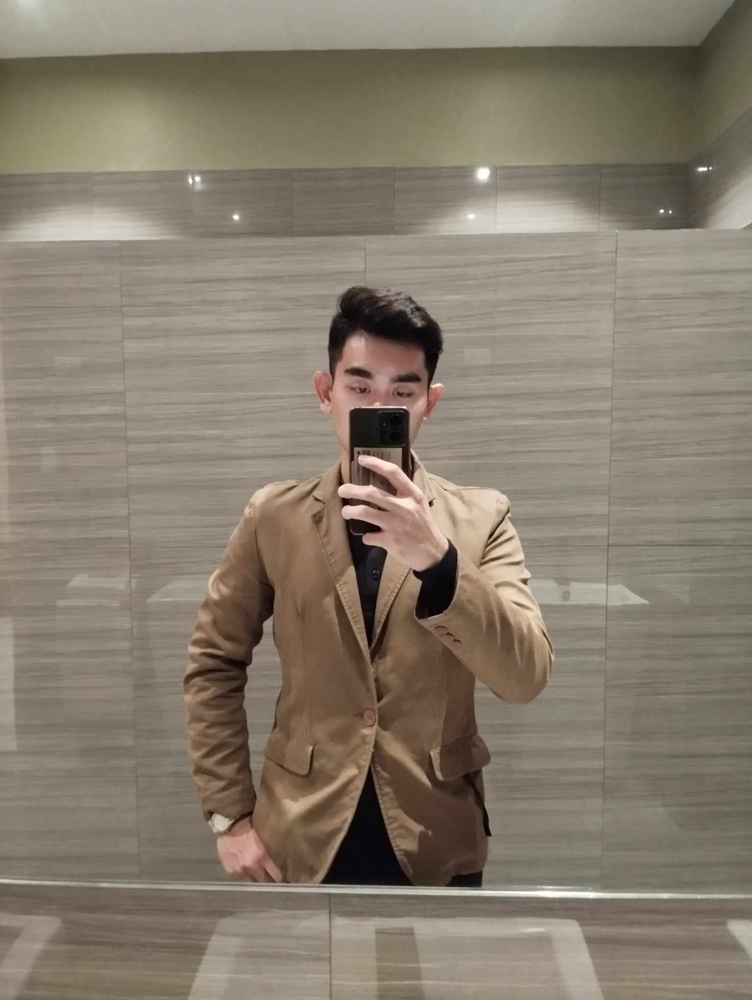
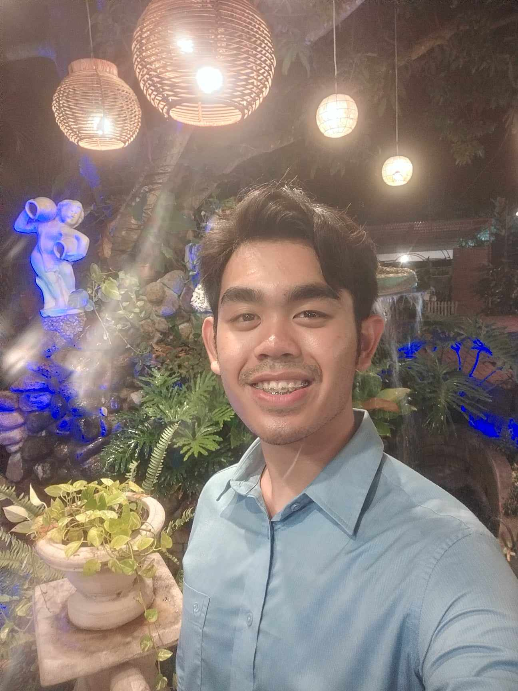
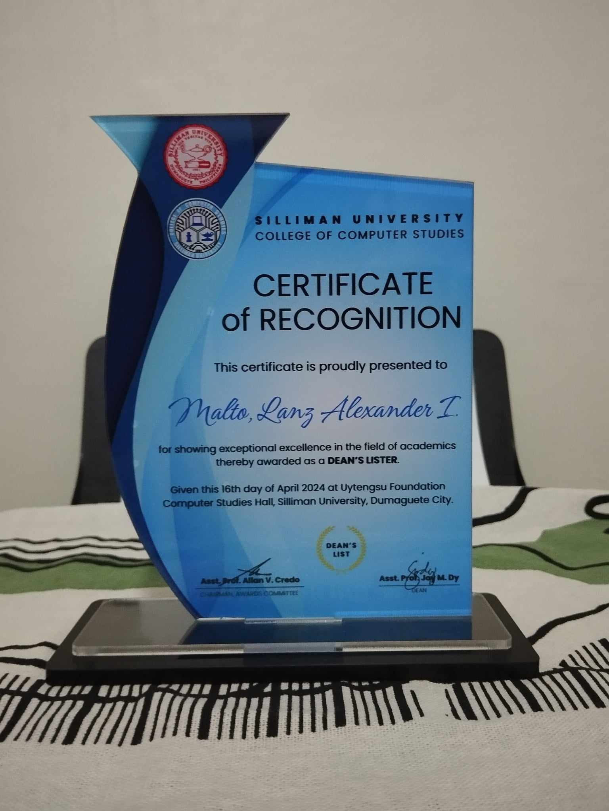
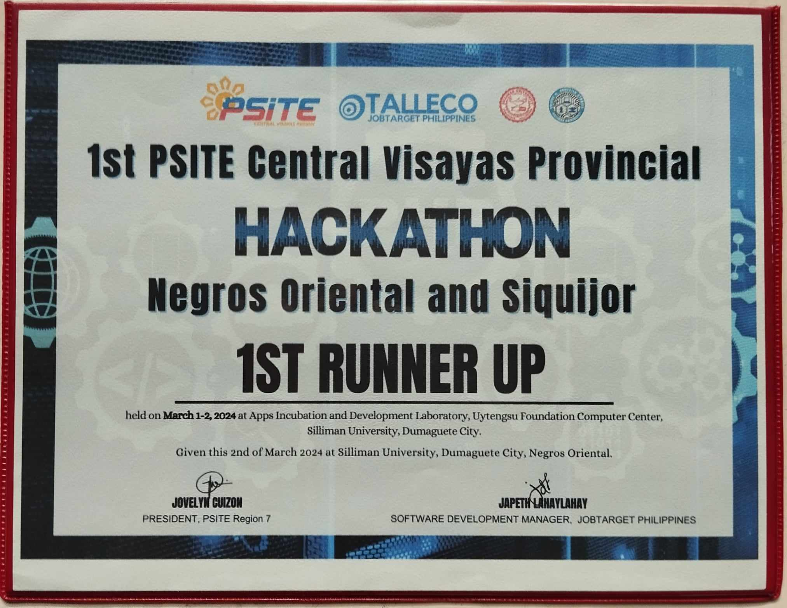
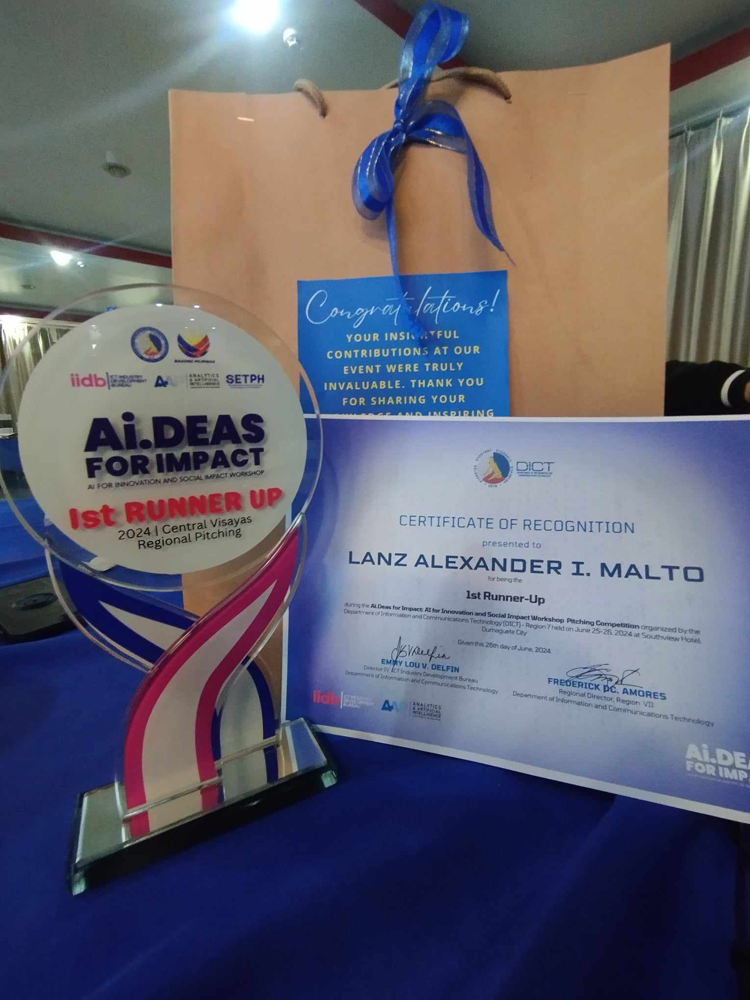

👋 Howdy! My name is Lanz Alexander I. Malto. I am 21 years old, and the only child in the family.
I'm a Filipino, originally from NCR, but I am currently situated at Negros Oriental. I am an
undergraduate of the course Bachelor of Science in Computer Science, and I am an aspiring
Software Developer.
🗨 As an ambivert, I enjoy interacting with others just as much as I enjoy my me time (although,
I am biased towards the latter ). As an almost-always bored person who anticipates the next
adventure, I'm usually one of the first people to accept any invitation to go places, either with
my loyal 14-man friend group, or with my tightly-knit group of cousins.
🙌 I am also a thrill-seeker, although more on the academic side of things. I pride myself in being
active, both with my college's student body, and in the co- and extra-curricular aspects of my
school life. In this regard, school has helped me awaken my leadership potential and developed my
skills. Professionally, I am a detail-oriented and adaptable individual who learns quickly and
knows how to follow instructions. If you'll ask me, I prefer working on my own. However, I can
still make ends meet with others as best as I can.
|  |  |  |  |  |
I have had my fair share of achievements and professional experience that I'm very much happy to share about. Yet, there are some which I'm notably proud of. These are, namely:
|  |  |  |
There are a lot of things in life which I enjoy spending time on. Some of these I can only sometimes enjoy, all make me happy nonetheless. These are my interests which I point those sentiments toward:
Of course, as human, we're one and the same in having our own sets of weaknesses, whether we'd like to admit it or not. Here are the things which I believe I ought to work on and change: